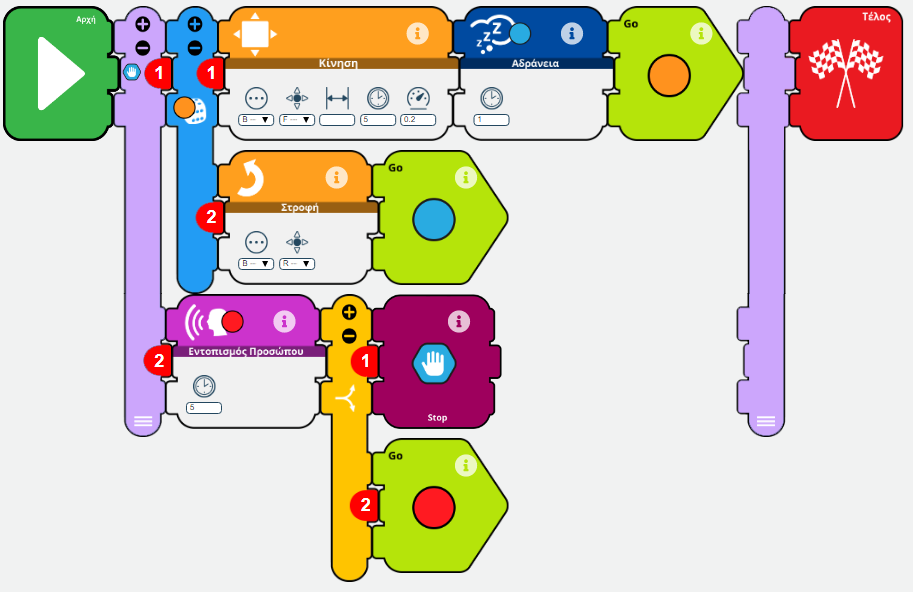

Simple talk application
#!/usr/bin/python
# -*- coding: utf-8 -*-
import sys
import os
import logging
from r4a_apis.utilities import *
from r4a_apis.tek_nodes import *
from r4a_apis.robot_api import RobotAPI
from r4a_apis.cloud_api import CloudAPI
from r4a_apis.generic_api import GenericAPI
try:
log = Logger(allow_cutelog = False, level = logging.INFO)
TekNode.logger = log
TekNode.robot_api = RobotAPI(logger = log)
TekNode.cloud_api = CloudAPI(memory = TekNode.robot_api.memory, logger = log)
TekNode.generic_api = GenericAPI(memory = TekNode.robot_api.memory, logger = log)
Condition.memory = TekNode.robot_api.memory
Condition.logger = log
InputMessage.logger = log
OutputMessage.logger = log
TekException.logger = log
NodeExecutor.logger = log
log.debug('main', "Hey, app is starting")
nodes = {}
nodes[0] = StartTekNode(0)
nodes[1] = TalkTekNode(1)
nodes[1].setParameters(language = Languages.EN, texts = ["Hello!"], volume = 100)
nodes[2] = StopTekNode(2)
# Conditions
# Transitions
nodes[0].setNextNode(id = 1)
nodes[1].setNextNode(id = 2)
# Thread executors
# Main execution
main_executor = NodeExecutor(exe_id = 0)
main_executor.addNode(id = 0, node = nodes[0])
main_executor.addNode(id = 1, node = nodes[1])
main_executor.addNode(id = 2, node = nodes[2])
main_executor.setStartingNode(id = 0)
# Go for it
main_executor.execute()
except TekException:
pass
Draw a rectangle

#!/usr/bin/python
# -*- coding: utf-8 -*-
import sys
import os
import logging
from r4a_apis.utilities import *
from r4a_apis.tek_nodes import *
from r4a_apis.robot_api import RobotAPI
from r4a_apis.cloud_api import CloudAPI
from r4a_apis.generic_api import GenericAPI
try:
log = Logger(allow_cutelog = False, level = logging.INFO)
TekNode.logger = log
TekNode.robot_api = RobotAPI(logger = log)
TekNode.cloud_api = CloudAPI(memory = TekNode.robot_api.memory, logger = log)
TekNode.generic_api = GenericAPI(memory = TekNode.robot_api.memory, logger = log)
Condition.memory = TekNode.robot_api.memory
Condition.logger = log
InputMessage.logger = log
OutputMessage.logger = log
TekException.logger = log
NodeExecutor.logger = log
log.debug('main', "Hey, app is starting")
nodes = {}
nodes[0] = StartTekNode(0)
nodes[2] = StopTekNode(2)
nodes[3] = RobotMotionTekNode(3)
nodes[3].setParameters(distance = None, duration = 5.0, direction = Directions.FORWARDS, speed = 0.2, type = MotionType.BASIC)
nodes[4] = CounterTekNode(4)
nodes[4].setParameters(name = "Counter", set_value = 0, change_by = 1)
nodes[5] = RobotTurnTekNode(5)
nodes[5].setParameters(type = MotionType.BASIC, direction = Directions.RIGHT)
nodes[6] = TransitionTekNode(6)
nodes[7] = TransitionTekNode(7)
# Conditions
cg62 = ConditionGroup(type = LogicalOperators.AND)
condition_cg62 = Condition (
left_operant = "Counter",
left_index = 0,
left_op_type = OperantTypes.COUNTER,
operator = RelationalOperators.EQUAL,
right_operant = 4.0,
right_index = 0
)
cg62.addCondition(condition_cg62)
cg67 = ConditionGroup(type = LogicalOperators.AND)
condition_cg67 = Condition (
left_operant = "Counter",
left_index = 0,
left_op_type = OperantTypes.COUNTER,
operator = RelationalOperators.NOT_EQUAL,
right_operant = 4.0,
right_index = 0
)
cg67.addCondition(condition_cg67)
# Transitions
nodes[0].setNextNode(id = 4)
nodes[3].setNextNode(id = 5)
nodes[4].setNextNode(id = 3)
nodes[5].setNextNode(id = 6)
nodes[6].setNextNode(id = 2, condition = cg62)
nodes[6].setNextNode(id = 7, condition = cg67)
nodes[7].setNextNode(id = 4)
# Thread executors
# Main execution
main_executor = NodeExecutor(exe_id = 0)
main_executor.addNode(id = 0, node = nodes[0])
main_executor.addNode(id = 2, node = nodes[2])
main_executor.addNode(id = 3, node = nodes[3])
main_executor.addNode(id = 4, node = nodes[4])
main_executor.addNode(id = 5, node = nodes[5])
main_executor.addNode(id = 6, node = nodes[6])
main_executor.addNode(id = 7, node = nodes[7])
main_executor.setStartingNode(id = 0)
# Go for it
main_executor.execute()
except TekException:
pass
Search for face and randomly move in parallel

#!/usr/bin/python
# -*- coding: utf-8 -*-
import sys
import os
import logging
from r4a_apis.utilities import *
from r4a_apis.tek_nodes import *
from r4a_apis.robot_api import RobotAPI
from r4a_apis.cloud_api import CloudAPI
from r4a_apis.generic_api import GenericAPI
try:
log = Logger(allow_cutelog = False, level = logging.INFO)
TekNode.logger = log
TekNode.robot_api = RobotAPI(logger = log)
TekNode.cloud_api = CloudAPI(memory = TekNode.robot_api.memory, logger = log)
TekNode.generic_api = GenericAPI(memory = TekNode.robot_api.memory, logger = log)
Condition.memory = TekNode.robot_api.memory
Condition.logger = log
InputMessage.logger = log
OutputMessage.logger = log
TekException.logger = log
NodeExecutor.logger = log
log.debug('main', "Hey, app is starting")
nodes = {}
nodes[0] = StartTekNode(0)
nodes[1] = ThreadsTekNode(1)
nodes[3] = DiceTekNode(3)
nodes[4] = RobotMotionTekNode(4)
nodes[4].setParameters(distance = None, duration = 5.0, direction = Directions.FORWARDS, speed = 0.2, type = MotionType.BASIC)
nodes[5] = RobotTurnTekNode(5)
nodes[5].setParameters(type = MotionType.BASIC, direction = Directions.RIGHT)
nodes[6] = SleepTekNode(6)
nodes[6].setParameters(duration = 1.0)
nodes[7] = TransitionTekNode(7)
nodes[8] = TransitionTekNode(8)
nodes[9] = DetectFaceTekNode(9)
nodes[9].setParameters(duration = 5.0)
nodes[10] = TransitionTekNode(10)
nodes[11] = TransitionTekNode(11)
nodes[12] = PreemptorTekNode(12)
nodes[12].setParameters(preempt_executors = [3])
nodes[13] = StopTekNode(13)
# Conditions
cg1012 = ConditionGroup(type = LogicalOperators.AND)
condition_cg1012 = Condition (
left_operant = TekVariables.DETECT_FACE_DETECTED,
left_index = 0,
operator = RelationalOperators.EQUAL,
right_operant = True,
right_index = 0
)
cg1012.addCondition(condition_cg1012)
cg1011 = ConditionGroup(type = LogicalOperators.AND)
condition_cg1011 = Condition (
left_operant = TekVariables.DETECT_FACE_DETECTED,
left_index = 0,
operator = RelationalOperators.EQUAL,
right_operant = False,
right_index = 0
)
cg1011.addCondition(condition_cg1011)
# Transitions
nodes[0].setNextNode(id = 1)
nodes[1].setNextNode(id = 13)
nodes[3].setNextNodeProbabilistic(id = 4, weight = 50.0)
nodes[3].setNextNodeProbabilistic(id = 5, weight = 50.0)
nodes[4].setNextNode(id = 6)
nodes[5].setNextNode(id = 7)
nodes[6].setNextNode(id = 8)
nodes[7].setNextNode(id = 6)
nodes[8].setNextNode(id = 3)
nodes[9].setNextNode(id = 10)
nodes[10].setNextNode(id = 12, condition = cg1012)
nodes[10].setNextNode(id = 11, condition = cg1011)
nodes[11].setNextNode(id = 9)
# Thread executors
executors_th_1 = {}
executors_th_1[3] = NodeExecutor(exe_id = 3)
executors_th_1[3].addNode(id = 3, node = nodes[3])
executors_th_1[3].addNode(id = 4, node = nodes[4])
executors_th_1[3].addNode(id = 6, node = nodes[6])
executors_th_1[3].addNode(id = 8, node = nodes[8])
executors_th_1[3].addNode(id = 5, node = nodes[5])
executors_th_1[3].addNode(id = 7, node = nodes[7])
executors_th_1[3].setStartingNode(id = 3)
executors_th_1[9] = NodeExecutor(exe_id = 9)
executors_th_1[9].addNode(id = 9, node = nodes[9])
executors_th_1[9].addNode(id = 10, node = nodes[10])
executors_th_1[9].addNode(id = 12, node = nodes[12])
executors_th_1[9].addNode(id = 11, node = nodes[11])
executors_th_1[9].setStartingNode(id = 9)
nodes[1].setParameters(executors = executors_th_1)
# Main execution
main_executor = NodeExecutor(exe_id = 0)
main_executor.addNode(id = 0, node = nodes[0])
main_executor.addNode(id = 1, node = nodes[1])
main_executor.addNode(id = 13, node = nodes[13])
main_executor.setStartingNode(id = 0)
# Go for it
main_executor.execute()
except TekException:
pass